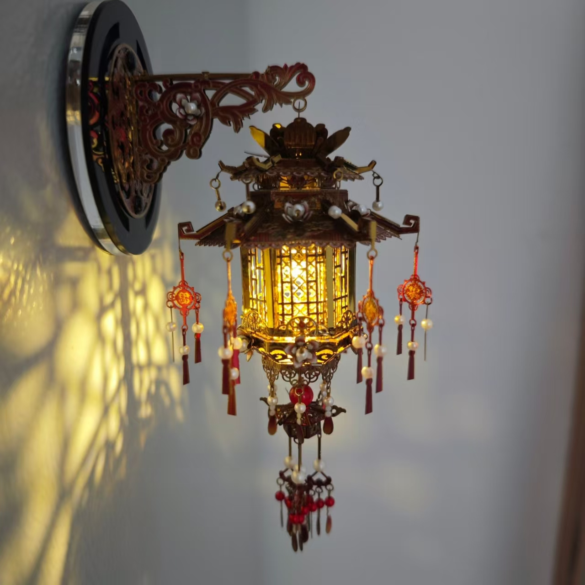

宫灯
宫廷灯彩艺术 · 国家级非物质文化遗产

一、技艺简介
宫灯是中国传统照明灯具的瑰宝，以精雕细琢的木质框架、绢纱或玻璃灯面、吉祥图案彩绘为主要特征。宫灯造型典雅、色彩华丽，凝聚了中国古代工匠的智慧与审美，是宫廷文化与传统手工艺完美结合的典范。
宫灯承载着吉祥、团圆、光明的文化寓意，是春节、元宵、中秋等传统节日的重要装饰，也是中国灯彩艺术的杰出代表。
二、历史渊源
宫灯起源于汉代，兴盛于明清。明代永乐年间迁都北京后，宫廷内设"灯作"专门制作宫灯。清代康熙、乾隆时期，宫灯制作技艺达到鼎盛，品种繁多、工艺精湛。
2008年，宫灯制作技艺被列入国家级非物质文化遗产名录。
三、主要形制
- 六角宫灯：最常见的形制，六面绘有图案，悬挂于厅堂
- 八角宫灯：形制更大，装饰繁复，常用于大型殿堂
- 走马灯：利用热空气驱动内轮旋转，画面连续转动
- 壁灯：贴墙安装，多用于走廊、过道
四、制作工序
- 选材：精选红木、紫檀等名贵木材，纹理细腻、不易变形
- 雕刻：在木框上雕刻龙凤、花鸟、云纹等传统图案
- 榫卯：采用传统榫卯结构组装框架，不用一钉一铆
- 裱糊：在框架上糊绢纱或绷玻璃，要求平整透亮
- 绘画：在灯面上绘制山水、人物、花鸟等工笔重彩画
- 装饰：安装流苏、珠串、铜饰等附件
五、图案寓意
- 龙凤：象征尊贵吉祥、夫妻和谐
- 花鸟：象征生机盎然、吉祥如意
- 山水：象征意境深远、福寿绵长
- 吉祥文字：福、禄、寿、喜，寓意美好祝愿
"宫灯之美，在于精雕细琢中的匠心独运。一盏宫灯点亮，照亮了宫廷的辉煌，也照亮了千年的传统与传承。"